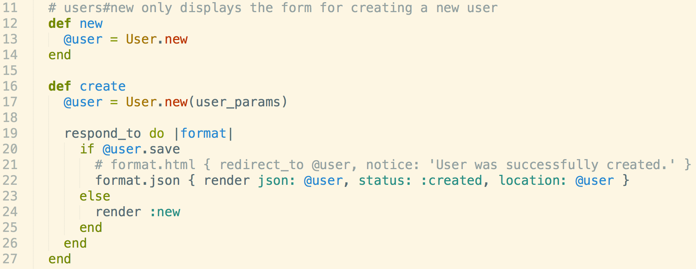
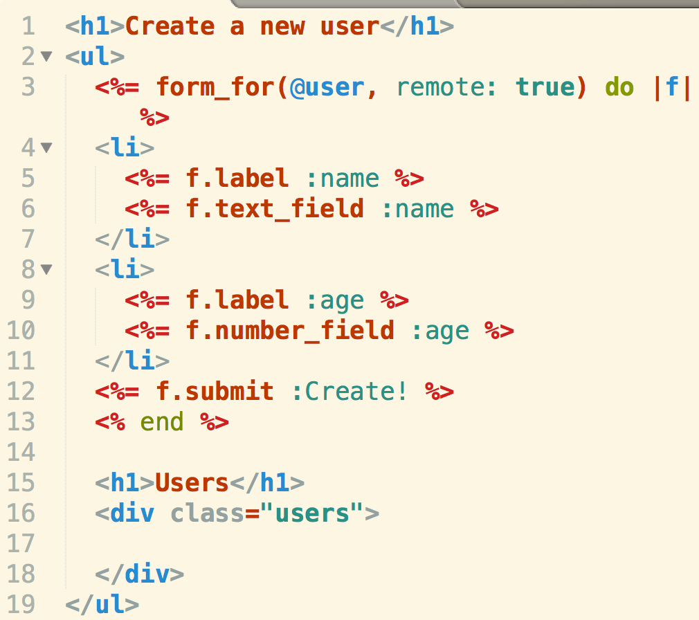
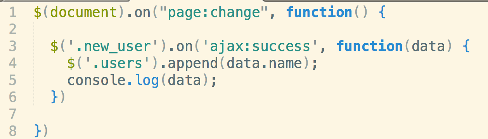

3 Ways...
In phase 3 of DevBootCamp, I have had the opportunity to learn under Steven Harms, one of the most meta-programmatic people I've ever met. He's been teaching us the history of bash, STDIN, STDOUT, and STDERR. Today he gave us the history of AJAX in Rails and how people chose their solutions. This is a quick walkthrough of a standard ajax call that posts an object to a view in rails. You can extrapolate this to make a single page application.
Routes
We started by setting up the routes with resources :users This will create RESTful routes in Rails. The ones we are most interested in today are GET /users/new and POST /users
Controller#Action
The RESTful routes mentioned above are associated with Controller#Action(s) new and create. Here is the code:
The new action only displays the new.html.erb form and associates it with the instance @user. The create action will first save the information from the new.html.erb form(line 20) and then format the form information into json that our JS file will grab.
View
The ajaxy new.html.view form looks similar to a normal form, but we passed a option to the helper method form_for on line 3 remote: true. This is the Rails way of doing JS ajax.
 We also created an empty div with class "users" on line 16 that we will use to display our attributes of our JSON using JavaScript.JavaScript.
Let's look at our JS file. There are many things different about this file from when we tried using JS on Sinatra. First up is line 1. Instead of .ready, we use .on("page:change",function(){}. We need to do this in Rails because turbolinks in Rails hijacks a portion of our JS methods.
On line 3 I'm selecting the empty div with class .users in new.html.erb and appending attributes of my JSON object from my controller#create action. Line 5 is for me to just view the JSON object in my DOM console.
